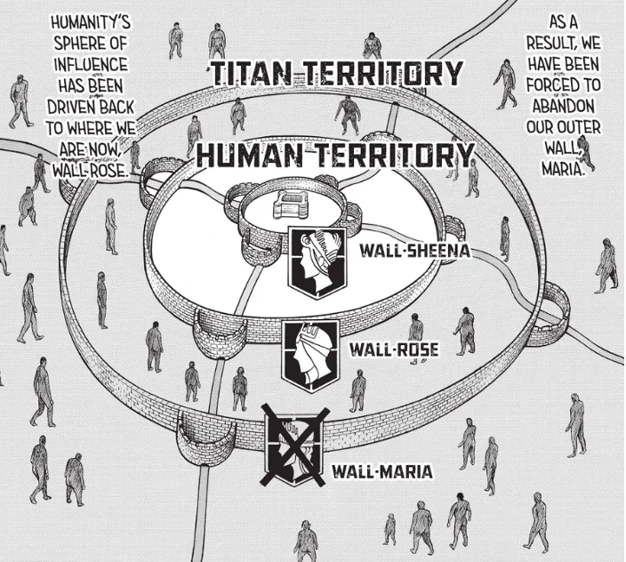

These three walls are to protect the last remaining of humanity: Wall Maria, Wall Rose, and Wall Sheena.
Series Overview
Attack on Titan is a dark fantasy manga and anime series set in a fictional world where humanity lives behind three enormous walls to protect itself from giant human-like creatures called Titans. The story begins with Eren Yeager, Mikasa Ackerman, and Armin Arlert, whose lives were changed forever when the Colossal Titan destroys the outer wall and allows Titans to invade their home.
Main Story
As the series continues, Eren and his friends join the military and fight to survive against the Titans. What begins as a story about survival soon becomes much deeper, revealing secrets about the Titans, the walls, and the true history of their world. The series is known for its intense battles, emotional moments, and major plot twists that constantly change how the audience views the story.